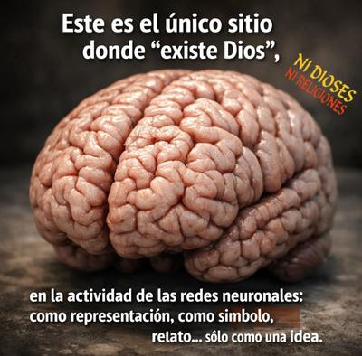

Desde la neurociencia sabemos ahora que toda idea, sin excepción, es una construcción del cerebro. No existen ideas «flotando» en el aire ni entidades mentales independientes del tejido neuronal: cada concepto, cada imagen, cada creencia y cada emoción, corresponde a patrones dinámicos de actividad en redes distribuidas de neuronas. Y en tal sentido, la idea de «Dios» no es distinta en su naturaleza biológica, de la idea de «árbol», «justicia», «dragón» o «infinito». Todas son configuraciones neurocognitivas.


Sin embargo, aquí aparece una distinción importante: no toda idea tiene un referente en la realidad física. El cerebro puede generar representaciones de cosas inexistentes con la misma facilidad con que representa cosas reales. Porque la neurobiología no discrimina ontológicamente: una neurona dispara igual cuando piensas en una montaña que realmente existe, que cuando piensas en el Olimpo de los dioses griegos. Porque la diferencia no está en la activación neuronal, sino en el contraste con el mundo.
En palabras del neurocientífico español Francisco Mora Teruel: «Como todas, la de Dios es una idea creada por el cerebro; pero nunca cobra realidad, porque Dios no está en el mundo. Si tratamos de encontrar en la realidad un reflejo de la idea de Dios, nos damos cuenta de que no existe. El mundo no alberga nada que encaje con la idea de Dios […] Por eso, Dios es sólo una idea.»[1]
Desde el punto de vista neurocientífico, esta afirmación es impecable. Porque resulta que el cerebro humano evolucionó para modelar la realidad, anticiparla y otorgarle significado, pero también es capaz de hiperproducir agencia, intención y causalidad, incluso donde no existen. Y este sesgo, profundamente adaptativo en la prehistoria (mejor confundir el viento con un depredador que al revés), favoreció la aparición de representaciones de agentes invisibles, voluntades ocultas y mentes trascendentes. Nace así, en términos cognitivos, la idea de «Dios».
Ahora bien, que exista un patrón neuronal asociado a esa idea en particular, no implica que exista el objeto al que supuestamente se refiere. Porque el correlato neural de «Dios», prueba únicamente esto: que el cerebro humano puede generar un concepto «Dios». Nada más. Y del mismo modo que la activación neuronal al imaginar un unicornio rosado no prueba la existencia de unicornios rosados, la activación neuronal al pensar en Yahvé, Alá o Brahma, tampoco prueba la existencia de tales entidades.
La confusión religiosa consiste en reificar la representación, es decir, convertir el contenido mental en entidad ontológica. Se comete así un error categorial: se pasa ilegítimamente del plano neuropsicológico al plano metafísico.
Y Mora Teruel subraya otro punto esencial: la idea de «Dios» está «amasada» de sentimientos. Lo cual es fundamental, porque las neurociencias demuestran que los conceptos cargados de emoción —miedo, consuelo, esperanza, culpa, dependencia— se consolidan con enorme fuerza sináptica. La amígdala, el hipocampo, el sistema dopaminérgico y la corteza prefrontal ventromedial, participan en dar a esas ideas una vividez subjetiva que las hace parecer «más reales» que otras. Pero ninguna intensidad emocional equivale a existencia ontológica.
Durante milenios, culturas enteras han ido modelando esa idea, añadiéndole atributos, narrativas, prohibiciones, promesas, castigos y recompensas. Pero el resultado no es una entidad externa, sino un constructo neurocultural extremadamente complejo, transmitido por lenguaje, ritual y educación desde la infancia, cuando el cerebro es más plástico y menos crítico.
Y aparece aquí el criterio central del conocimiento científico: la contrastación con la realidad. Para que una idea sea conocimiento, debe poder ser confrontada con el mundo real, y resistir esa confrontación. El electrón, aunque invisible, deja huellas medibles. La gravedad, aunque abstracta, produce efectos cuantificables. Un virus, aunque microscópico, se detecta por sus consecuencias físicas. En cambio, la idea de «Dios», no encuentra ningún correlato empírico independiente del cerebro que la produce. No hay fenómeno natural que exija la hipótesis «Dios» para ser explicado.
Por eso, como afirma Mora Teruel, «Dios no está en el mundo», está en el cerebro. Está en la actividad de redes neuronales moldeadas por la evolución, la emoción, el lenguaje y la cultura. Existe como representación, como símbolo, como relato, como necesidad psicológica en algunos individuos. Pero no como entidad verificable.
En otras palabras, desde una perspectiva neurocientífica, la conclusión es clara:
«Dios» no es una realidad descubierta.
«Dios» es una realidad imaginada.
No es un ser que el cerebro percibe, sino una idea que el cerebro fabrica.
No es un objeto del universo, sino un producto de la mente humana.
En suma: la neurociencia no elimina a «Dios»; simplemente lo devuelve a su lugar real. No está en el cielo, ni en el cosmos, ni en el origen del tiempo, tampoco en el corazón de los creyentes, sino en el tejido blando y eléctrico de un órgano llamado cerebro. Allí nació. Allí vive. Y sólo allí podemos decir que «existe».
[Godless Freeman]
Comentarios
Comments powered by Disqus